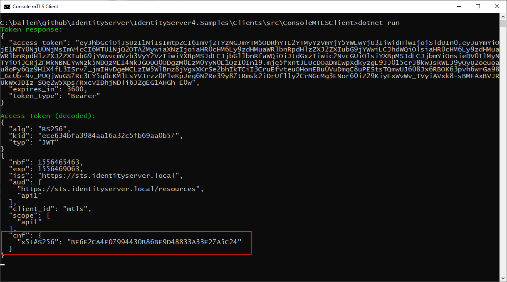

Mutual TLS¶
Mutual TLS support in IdentityServer allows for two features:
Client authentication to IdentityServer endpoints using a TLS X.509 client certificate
Binding of access tokens to clients using a TLS X.509 client certificate
注解
See the "OAuth 2.0 Mutual-TLS Client Authentication and Certificate-Bound Access Tokens" spec for more information
Setting up MTLS involves a couple of steps.
Server setup¶
It's the hosting layer's responsibility to do the actual validation of the client certificate. IdentityServer will then use that information to associate the certificate with a client and embed the certificate information in the access tokens.
Depending which server you are using, those steps are different. See this blog post for more information.
注解
mkcert is a nice utility for creating certificates for development purposes.
ASP.NET Core setup¶
Depending on the server setup, there are different ways how the ASP.NET Core host will receive the client certificate. While for IIS and pure Kestrel hosting, there are no additional steps, typically you have a reverse proxy in front of the application server.
This means that in addition to the typical forwarded headers handling, you also need to process the header that contains the client certificate.
Add a call to app.UseCertificateForwarding(); in the beginning of your middleware pipeline for that.
The exact format how proxies transmit the certificates is not standardized, that's why you need to register a callback to do the actual header parsing. The Microsoft docs show how that would work for Azure Web Apps.
If you are using Nginx (which we found is the most flexible hosting option), you need to register the following service in ConfigureServices:
services.AddCertificateForwarding(options =>
{
// header name might be different, based on your nginx config
options.CertificateHeader = "X-SSL-CERT";
options.HeaderConverter = (headerValue) =>
{
X509Certificate2 clientCertificate = null;
if(!string.IsNullOrWhiteSpace(headerValue))
{
var bytes = Encoding.UTF8.GetBytes(Uri.UnescapeDataString(headerValue));
clientCertificate = new X509Certificate2(bytes);
}
return clientCertificate;
};
});
Once, the certificate has been loaded, you also need to setup the authentication handler.
In this scenario we want to support self-signed certificates, hence the CertificateType.All and no revocation checking.
These settings might be different in your environment:
services.AddAuthentication()
.AddCertificate(options =>
{
options.AllowedCertificateTypes = CertificateTypes.All;
options.RevocationMode = X509RevocationMode.NoCheck;
});
IdentityServer setup¶
Next step is to enable MTLS in IdentityServer. For that you need to specify the name of the certificate authentication handler you set-up in the last step (defaults to Certificate),
and the MTLS hosting strategy.
In IdentityServer, the mutual TLS endpoints, can be configured in three ways (assuming IdentityServer is running on https://identityserver.io:
path-based - endpoints located beneath the path
~/connect/mtls, e.g.https://identityserver.io/connect/mtls/token.sub-domain based - endpoints are on a sub-domain of the main server, e.g.
https://mtls.identityserver.io/connect/token.domain-based - endpoints are on a different domain, e.g.
https://identityserver-mtls.io.
For example:
var builder = services.AddIdentityServer(options =>
{
options.MutualTls.Enabled = true;
options.MutualTls.ClientCertificateAuthenticationScheme = "Certificate";
// uses sub-domain hosting
options.MutualTls.DomainName = "mtls";
});
IdentityServer's discovery document reflects those endpoints:

Client authentication¶
Clients can use a X.509 client certificate as an authentication mechanism to endpoints in IdentityServer.
For this you need to associate a client certificate with a client in IdentityServer. Use the IdentityServer builder to add the services to DI which contain a default implementation to do that either thumbprint or common-name based:
builder.AddMutualTlsSecretValidators();
Finally, for the client configuration add to the ClientSecrets collection a secret type of either SecretTypes.X509CertificateName
if you wish to authenticate the client from the certificate distinguished name or SecretTypes.X509CertificateThumbprint if you wish to authenticate the client by certificate thumbprint.
For example:
new Client
{
ClientId = "mtls",
AllowedGrantTypes = GrantTypes.ClientCredentials,
AllowedScopes = { "api1" }
ClientSecrets =
{
// name based
new Secret(@"CN=mtls.test, OU=ROO\ballen@roo, O=mkcert development certificate", "mtls.test")
{
Type = SecretTypes.X509CertificateName
},
// or thumbprint based
//new Secret("bca0d040847f843c5ee0fa6eb494837470155868", "mtls.test")
//{
// Type = SecretTypes.X509CertificateThumbprint
//},
},
}
Using a client certificate to authenticate to IdentityServer¶
When writing a client to connect to IdentityServer, the SocketsHttpHandler (or HttpClientHandler if you are on older .NET Framework versions)
class provides a convenient mechanism to add a client certificate to outgoing requests.
And then HTTP calls (including using the various IdentityModel extension methods) with the HttpClient
will perform client certificate authentication at the TLS channel.
For example:
static async Task<TokenResponse> RequestTokenAsync()
{
var handler = new SocketsHttpHandler();
var cert = new X509Certificate2("client.p12", "password");
handler.SslOptions.ClientCertificates = new X509CertificateCollection { cert };
var client = new HttpClient(handler);
var disco = await client.GetDiscoveryDocumentAsync(Constants.Authority);
if (disco.IsError) throw new Exception(disco.Error);
var response = await client.RequestClientCredentialsTokenAsync(new ClientCredentialsTokenRequest
{
Address = disco
.TryGetValue(OidcConstants.Discovery.MtlsEndpointAliases)
.Value<string>(OidcConstants.Discovery.TokenEndpoint)
.ToString(),
ClientId = "mtls",
Scope = "api1"
});
if (response.IsError) throw new Exception(response.Error);
return response;
}
Sender-constrained access tokens¶
Whenever a client authenticates to IdentityServer using a client certificate, the thumbprint of that certificate will be embedded in the access token.
Clients can use a X.509 client certificate as a mechanism for sender-constrained access tokens when authenticating to APIs. The use of these sender-constrained access tokens requires the client to use the same X.509 client certificate to authenticate to the API as the one used for IdentityServer.
Confirmation claim¶
When a client obtains an access token and has authenticated with mutual TLS, IdentityServer issues a confirmation claim (or cnf) in the access token.
This value is a hash of the thumbprint of the client certificate used to authenticate with IdentityServer.
This value can be seen in this screen shot of a decoded access token:
The API will then use this value to ensure the client certificate being used at the API matches the confirmation value in the access token.
Validating and accepting a client certificate in APIs¶
As mentioned above for client authentication in IdentityServer, in the API the web server is expected to perform the client certificate validation at the TLS layer.
Additionally, the API hosting application will need a mechanism to accept the client certificate in order to obtain the thumbprint to perform the confirmation claim validation. Below is an example how an API in ASP.NET Core might be configured for both access tokens and client certificates:
services.AddAuthentication("token")
.AddIdentityServerAuthentication("token", options =>
{
options.Authority = "https://identityserver.io";
options.ApiName = "api1";
})
.AddCertificate(options =>
{
options.AllowedCertificateTypes = CertificateTypes.All;
});
Finally, a mechanism is needed that runs after the authentication middleware to authenticate the client certificate and compare the thumbprint to the cnf from the access token.
Below is a simple middleware that checks the claims:
public class ConfirmationValidationMiddlewareOptions
{
public string CertificateSchemeName { get; set; } = CertificateAuthenticationDefaults.AuthenticationScheme;
public string JwtBearerSchemeName { get; set; } = JwtBearerDefaults.AuthenticationScheme;
}
// this middleware validate the cnf claim (if present) against the thumbprint of the X.509 client certificate for the current client
public class ConfirmationValidationMiddleware
{
private readonly RequestDelegate _next;
private readonly ConfirmationValidationMiddlewareOptions _options;
public ConfirmationValidationMiddleware(RequestDelegate next, ConfirmationValidationMiddlewareOptions options = null)
{
_next = next;
_options = options ?? new ConfirmationValidationMiddlewareOptions();
}
public async Task Invoke(HttpContext ctx)
{
if (ctx.User.Identity.IsAuthenticated)
{
var cnfJson = ctx.User.FindFirst("cnf")?.Value;
if (!String.IsNullOrWhiteSpace(cnfJson))
{
var certResult = await ctx.AuthenticateAsync(_options.CertificateSchemeName);
if (!certResult.Succeeded)
{
await ctx.ChallengeAsync(_options.CertificateSchemeName);
return;
}
var certificate = await ctx.Connection.GetClientCertificateAsync();
var thumbprint = Base64UrlTextEncoder.Encode(certificate.GetCertHash(HashAlgorithmName.SHA256));
var cnf = JObject.Parse(cnfJson);
var sha256 = cnf.Value<string>("x5t#S256");
if (String.IsNullOrWhiteSpace(sha256) ||
!thumbprint.Equals(sha256, StringComparison.Ordinal))
{
await ctx.ChallengeAsync(_options.JwtBearerSchemeName);
return;
}
}
}
await _next(ctx);
}
Below is an example pipeline for an API:
app.UseForwardedHeaders(new ForwardedHeadersOptions
{
ForwardedHeaders = ForwardedHeaders.XForwardedFor | ForwardedHeaders.XForwardedProto
});
app.UseCertificateForwarding();
app.UseRouting();
app.UseAuthentication();
app.UseMiddleware<ConfirmationValidationMiddleware>(new ConfirmationValidationMiddlewareOptions
{
CertificateSchemeName = CertificateAuthenticationDefaults.AuthenticationScheme,
JwtBearerSchemeName = "token"
});
app.UseAuthorization();
app.UseEndpoints(endpoints =>
{
endpoints.MapControllers();
});
Once the above middleware succeeds, then the caller has been authenticated with a sender-constrained access token.
Introspection and the confirmation claim¶
When the access token is a JWT, then the confirmation claim is contained in the token as a claim.
When using reference tokens, the claims that the access token represents must be obtained via introspection.
The introspection endpoint in IdentityServer will return a cnf claim for reference tokens obtained via mutual TLS.
Ephemeral client certificates¶
You can use the IdentityServer MTLS support also to create sender-constrained access tokens without using the client certificate for client authentication. This is useful for situations where you already have client secrets in place that you don't want to change, e.g. shared secrets, or better private key JWTs.
Still, if a client certificate is present, the confirmation claim can be embedded in outgoing access tokens. And as long as the client is using the same client certificate to request the token and calling the API, this will give you the desired proof-of-possession properties.
For this enable the following setting in the options:
var builder = services.AddIdentityServer(options =>
{
// other settings
options.MutualTls.AlwaysEmitConfirmationClaim = true;
});
Using an ephemeral certificate to request a token¶
In this scenario, the client uses some client secret (a shared secret in the below sample), but attaches an additional client certificate to the token request. Since this certificate does not need to be associated with the client at the token services, it can be created on the fly:
static X509Certificate2 CreateClientCertificate(string name)
{
X500DistinguishedName distinguishedName = new X500DistinguishedName($"CN={name}");
using (RSA rsa = RSA.Create(2048))
{
var request = new CertificateRequest(distinguishedName, rsa, HashAlgorithmName.SHA256,RSASignaturePadding.Pkcs1);
request.CertificateExtensions.Add(
new X509KeyUsageExtension(X509KeyUsageFlags.DataEncipherment | X509KeyUsageFlags.KeyEncipherment | X509KeyUsageFlags.DigitalSignature , false));
request.CertificateExtensions.Add(
new X509EnhancedKeyUsageExtension(
new OidCollection { new Oid("1.3.6.1.5.5.7.3.2") }, false));
return request.CreateSelfSigned(new DateTimeOffset(DateTime.UtcNow.AddDays(-1)), new DateTimeOffset(DateTime.UtcNow.AddDays(10)));
}
}
Then use this client certificate in addition to the already setup-up client secret:
static async Task<TokenResponse> RequestTokenAsync()
{
var client = new HttpClient(GetHandler(ClientCertificate));
var disco = await client.GetDiscoveryDocumentAsync("https://identityserver.local");
if (disco.IsError) throw new Exception(disco.Error);
var endpoint = disco
.TryGetValue(OidcConstants.Discovery.MtlsEndpointAliases)
.Value<string>(OidcConstants.Discovery.TokenEndpoint)
.ToString();
var response = await client.RequestClientCredentialsTokenAsync(new ClientCredentialsTokenRequest
{
Address = endpoint,
ClientId = "client",
ClientSecret = "secret",
Scope = "api1"
});
if (response.IsError) throw new Exception(response.Error);
return response;
}
static SocketsHttpHandler GetHandler(X509Certificate2 certificate)
{
var handler = new SocketsHttpHandler();
handler.SslOptions.ClientCertificates = new X509CertificateCollection { certificate };
return handler;
}